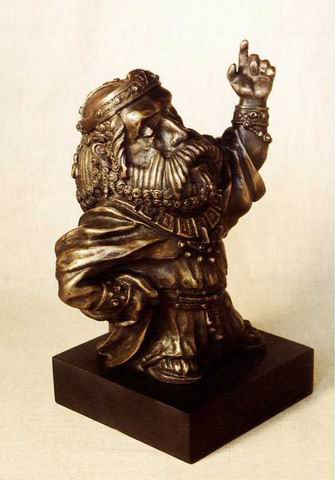

МОИ РАБОТЫ. ГЕРОИ ТАНАХа

Один добропорядочный еврей спросил меня, не опасаюсь ли я своими работами навязать другим слишком субъективный взгляд и искаженное понимание библейских персонажей.
Действительно, восприятие каждого из нас очень субъективно и не есть истина. Это всего лишь только наше ограниченное понимание прочитанного. Но я уверен, Бог хочет, чтобы мы размышляли, представляли, своим творчеством исследовали св. тексты и делились своим пониманием, осознавая при том, что наше понимание - не есть истина, но попытка ее осмыслить.
см. также статью "Герои Библии - мои родственники".
автор: Эфраим Калиш /TORAART/